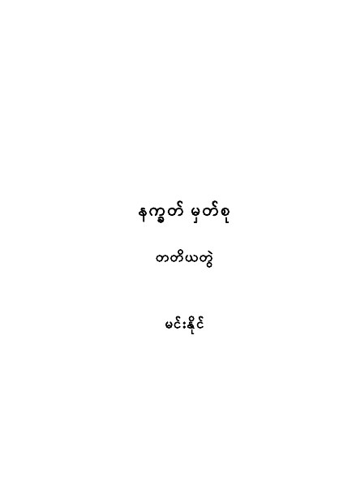
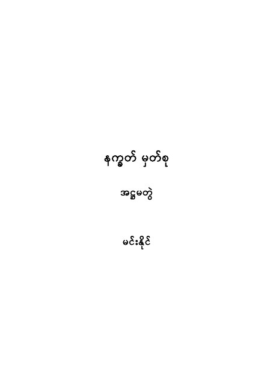
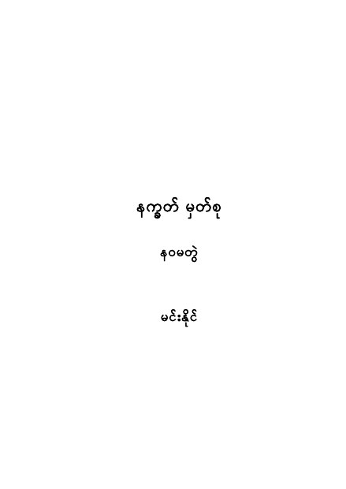

ဆရာမင်းနိုင်ရဲ့ စာအုပ်များ
-
နက္ခတ်မှတ်စု အတွဲ ၁
Download PDF -
နက္ခတ်မှတ်စု အတွဲ ၂
Download PDF -

နက္ခတ်မှတ်စု အတွဲ ၃
Download PDF -
နက္ခတ်မှတ်စု အတွဲ ၄
Download PDF -
နက္ခတ်မှတ်စု အတွဲ ၅
Download PDF -
နက္ခတ်မှတ်စု အတွဲ ၆
Download PDF -
နက္ခတ်မှတ်စု အတွဲ ၇
Download PDF -

နက္ခတ်မှတ်စု အတွဲ ၈
Download PDF -

နက္ခတ်မှတ်စု အတွဲ ၉
Download PDF
သိမ်းထားသော ဇာတာများ
တြိပတာကီစက်
တြိပတာကီစက် ရလဒ်
တွက်နည်းနှင့် အသုံးပြုပုံ (အခန်း ၃ · စာမျက်နှာ ၆၃ – ၇၇)
တွက်ချက်ပုံ
ကေတုပတာကီစက်ကို ကြည့်ပါ။ နေမနက္ခတ်အလိုက် စိုးမိုးတဲ့ ဂြိုဟ်ကို ကြည့်ပါ။ ဒီဂြိုဟ်ဟာ မိမိ မွေးချိန်ကနေ တစ်နှစ်သား ပြည့်ချိန်အထိ စိုးမိုးပါလိမ့်မယ်။ ပြီးရင် နာရီလက်တံ ပြောင်းပြန် လှည့်သလို လှည့်သွားပါ။ အကွက် ကိုးကွက် ရှိနေတော့ အသက်ကို တည်၊ ကိုးနဲ့စား၊ အကြွင်းကို နာရီလက်တံ ပြောင်းပြန် ယူသွားရင် အမြန် သိရပါတယ်။ ကေတုစက်မှာ ဆယ့်နှစ်ပုံ ပုံထားလို့ ဆယ့်နှစ်နဲ့ စားရမယ် (အဘိဇိနက္ခတ်ပါ ၂၈ လုံးမူ)။ ဂုရုစက်မှာ ကိုးပုံ ပုံထားလို့ ကိုးနဲ့ စားမယ်။
စက်တစ်စက်ချင်း၏ အသုံးပြုနည်း
ကေတုပတာကီစက်၊ ဂုရုစက်၊ ကေတုစက်ဆိုပြီး ခွဲခြားခေါ်ထားကြပေမယ့် ဒီစက်သုံးခုကို ရောပြီး ခေါ်ရင် တြိပတာကီစက်လို့ ခေါ်ကြပါတယ်။ ပတာကီဆိုတာက အလံကိုင်ထားသူ၊ တိုက်တွန်းနှိုးဆော်ပေးသူ ဖြစ်လို့ စိုးမိုးဂြိုဟ်ဟာ အဲဒီစိုးမိုးနှစ်မှာ ထင်ရှားစွာ အလုပ်လုပ်ပါတယ်။ အဲဒီဂြိုဟ်ဆိုင်ရာ ပရိယာယ်အရောင်၊ အဆောင်၊ အလှူဒါနတို့ကို ဉာဏ်နဲ့ယှဉ်ပြီး သုံးနိုင်သလို အဲဒီဂြိုဟ် မကြိုက်တဲ့ အကုသိုလ်၊ အနေအထိုင်၊ အပြုအမူတွေကို ရှောင်ကြဉ်ရပါတယ်။
ကေတုပတာကီစက် — ကေတုဆိုတာ အလင်းကို ဆိုလိုပါတယ် (ကိတ်ဂြိုဟ်ကို ဆိုလိုတာ မဟုတ်ပါ)။ စိုးမိုးဂြိုဟ်အလိုက် အလင်းရောင်၊ အရောင်အဆင်းတို့ကို ချိန်ဆအသုံးပြုနိုင်ပါတယ်။
ဂုရုစက် — မိမိ အားကိုးအားထားပြုရမယ့် ဆရာကောင်း၊ တိုင်ပင်ဖော် တိုင်ပင်ဖက်၊ မိတ်ဆွေကောင်းကို ဆိုလိုပါတယ်။ စိုးမိုးဂြိုဟ် ပရိယာယ်တွေနဲ့ ညှိပြီး အသုံးပြုနိုင်ပါတယ်။
ကေတုစက် — ကေတုဟာ ကိတ်ဂြိုဟ် ဖြစ်ပြီး စရဏကျင့်ခြင်း၊ လွတ်မြောက်မှု ရှာခြင်းနဲ့ ဆိုင်ပါတယ်။ ရောက်ဆဲ စိုးမိုးဂြိုဟ်ရဲ့ ပရိယာယ် သဘောသဘာဝအလိုက် စရဏကျင့်တာဟာ အစစ အရာရာတိုင်း အလွန်ကောင်းပါတယ်။ စရဏမှာ ဘာမှ မတွက်ချင်ရင် မိမိရဲ့ မူလ ဇနမနက္ခတ်ရဲ့ သဘောသဘာဝတွေအလိုက်ပဲ တစ်သက်လုံး ကျင့်နေလို့လဲ ရပါတယ်။
သုံးစက်တွဲ လေးလပိုင်းစနစ်
ဘယ်အသက်မှာမဆို ပထမလေးလကို ကေတုပတာကီစက်က စိုးမိုးဂြိုဟ်၊ ဒုတိယလေးလကို ကေတုစက်ရဲ့ စိုးမိုးဂြိုဟ်၊ တတိယလေးလကိုတော့ ဂုရုစက်ရဲ့ စိုးမိုးဂြိုဟ်က စိုးမိုးပါတယ်။
မူလ/ကောဇာနှင့် ညှိနှိုင်းဟောကြားရန် မှတ်ချက်
ပုံသေအဟောများအပြင် မူလဇာတာနှင့် ကောဇာဇာတာမှာ ဒီစိုးမိုးဂြိုဟ်တွေ ရပ်တည်ပုံကို ကြည့်ပြီး ဟောတာက ပိုမှန်ပါတယ်။ ဥပမာ — မိဂသီနက္ခတ် စန်းယှဉ်မွေးသူ အသက် ၄၄ နှစ်ထဲမှာ ပထမလေးလကို တနင်္ဂနွေက စိုးမိုးပြီး ပုံသေအဟောမှာ ဒုက္ခလို့ ဆိုထားပေမယ့် ကောဇာမှာ တနင်္ဂနွေက ဥစ်ရာသီဖြစ်တဲ့ မိဿရာသီကို ရောက်နေချိန်ဆိုရင် အပြင်ဒုက္ခထက် အလုပ်ပင်ပန်းနွမ်းနယ်မှုမျိုးသာ ကြုံရပြီး ငွေကြေးလာဘ်လာဘပါ ရရှိနိုင်ပါတယ်။ ဒါ့ကြောင့် ပုံသေအဟောနဲ့ မူလ/ကောဇာ ဇာတာကို ညှိနှိုင်းချိန်ဆရပါမယ်။
ဆုတောင်းပြည့် အရပ်မျက်နှာ
အခန်း (၃၀) · နက္ခတ္တကာလဘူမိစက် — ကောဇာ စန်းယှဉ်နက္ခတ်ဖြင့် တိုက်ရိုက်အသုံးပြုရန်
နက္ခတ် ၂၇ လုံး အရပ်မျက်နှာဇယား
အသုံးပြုပုံနှင့် ဆရာမင်းနိုင်၏ မှတ်ချက် (အခန်း ၃၀ · စာမျက်နှာ ၁၈၄ – ၁၈၆)
ဒီစနစ်ကို ကောဇာ စန်းယှဉ်နက္ခတ်နဲ့ပဲ သုံးပါ။ မိမိ လိုရာ ဆု တစ်ခုပဲ တောင်း၊ မပြည့်မရှိပါ။ အခန်း ၃၁ နဲ့ ၃၂ မှာ ရေးပေးမယ့် စာတွေနဲ့လဲ ချိတ်ဆက်တတ်ပါစေ။
ဒုတိယစနစ်ဟာ မိမိက သူတစ်ပါးကို ဆုပေးရင်တောင် ပြည့်စေတတ်သော အရပ်မျက်နှာများ ဖြစ်ပါတယ်။ မိမိအတွက်လဲ အသုံးပြုနိုင်ပါတယ်။ ဒါကိုလဲ ကောဇာစန်းယှဉ်နက္ခတ်တွေနဲ့ပဲ သုံးပါ။
နက္ခတ်ဟာ ကျက်သရေ မင်္ဂလာ ရှိခြင်းနဲ့ တွဲဖက်ရတာမို့လို့ ကျက်သရေ မင်္ဂလာရှိသော မနောကံ၊ ကျက်သရေ မင်္ဂလာရှိသော ဝစီကံ၊ ကျက်သရေ မင်္ဂလာရှိသော ကာယကံများကို ကောင်းသည်ထက် ကောင်းအောင် တည်ထောင်ယူနေမှသာလျှင် ဒီပညာခွင်ဟာ ကိုယ့်ဆီမှာ မြဲမယ်၊ အကျိုးပေးမယ်။
နရပတိဇေယျစာရရဲ့ သရောဒယကျမ်းမှာပါတဲ့ နက္ခတ္တကာလဘူမိစက်ကို လူတိုင်း အလွယ်သုံးတတ်အောင် ရေးပေးထားခြင်း ဖြစ်ပါတယ်။ ကောဇာစန်းစီးလာတာနဲ့တင် ဒီနက္ခတ်အရပ်မျက်နှာ စနစ်ကို သုံးလို့ရပါတယ်။ ပါပဂြိုဟ်စီးတာ၊ လတ္တာ၊ ဥပဂြဟ ဘာညာ ဘာမှ ထည့်စဉ်းစားစရာ မလိုပါဘူး။
လတ္တာစက်
အခန်း (၂၀) · ဂြိုဟ် ၉ လုံး လတ္တာသင့် နက္ခတ်နှင့် အဟောများ (Lahiri ခန့်မှန်းတွက်ချက်မှု)
လတ္တာစက် တွက်နည်း၊ အဟောနှင့် ဆရာမင်းနိုင်၏ ရှင်းလင်းချက် (အခန်း ၂၀ · စာမျက်နှာ ၇၇ – ၈၁)
ဂြိုဟ် ၉ လုံး လတ္တာတွက်ပုံ
ရှေ့တိုးရေတွက်သော ဂြိုဟ် ၄ လုံး (ရှေ့ကာကွယ်ရေးစနစ်) — တနင်္ဂနွေ (ရှေ့ ၁၂ လုံးမြောက်)၊ အင်္ဂါ (ရှေ့ ၃ လုံးမြောက်)၊ ကြာသပတေး (ရှေ့ ၆ လုံးမြောက်)၊ စနေ (ရှေ့ ၈ လုံးမြောက်)။
နောက်ဆုတ်ရေတွက်သော ဂြိုဟ် ၅ လုံး (နောက်ကျောကာကွယ်ရေးစနစ်) — တနင်္လာ (နောက် ၂၂ လုံးမြောက်)၊ ဗုဒ္ဓဟူး (နောက် ၇ လုံးမြောက်)၊ သောကြာ (နောက် ၅ လုံးမြောက်)၊ ရာဟု (နောက် ၉ လုံးမြောက်)၊ ကိတ် (နောက် ၉ လုံးမြောက် — ရာဟုနှင့် လတ္တာချင်းတူ)။
လတ္တာ၏ အနှစ်သာရနှင့် အသုံးချပုံ
လတ္တာဆိုသည်မှာ ဂြိုဟ်တို့၏ ခုခံကာကွယ်မှုစနစ် (ကိုယ်ရံတော်တပ်သား ကင်းပုန်းရှိရာ နက္ခတ်) ကို ဆိုလိုပါသည်။ လုံခြုံရေးယူထားသော နေရာသို့ ထင်သလို ဝင်ထွက်သွားလာမိလျှင် ဘေးသင့်တတ်သော်လည်း၊ မည်သည့်နက္ခတ် လတ္တာမိနေစေကာမူ ငြိမ်ငြိမ်လေး နေတတ်ပြီး သက်ဆိုင်ရာဂြိုဟ်ကို ကောင်းသောအသွင်ဆောင် ယတြာ/ကုသိုလ်ပြုပေးပါက ကျေးဇူးတုံ့ပြန်ခြင်း (ဥပမာ — အိမ်ပိုင်ရခြင်း) ကဲ့သို့ ကောင်းကျိုးပြန်လည်ရရှိနိုင်ပါသည်။
အခါရွေးရာတွင် လတ္တာသင့်ထားသော နက္ခတ်များကို ရှောင်ရပါမည်။ နက္ခတ်တစ်လုံးသည် ဥပဂြဟလည်းဖြစ်၊ လတ္တာလည်းသင့်၊ ပါပဂြိုဟ်လည်းစီးနေလျှင် အနာရောဂါနှိပ်စက်တတ်ပြီး ပါပဂြိုဟ် ဝကြသွားပါက အထူးသတိပြုရပါမည်။
မူလဇာတာတွင် လတ္တာသင့်သော နက္ခတ်များသည် အတိတ်ဘဝက မိမိ အလေးမထား ဥပေက္ခာပြုခဲ့သော အရာများကို ညွှန်ပြတတ်သဖြင့် ဤဘဝတွင် တန်ဖိုးထား ကျေးဇူးတင်တတ်အောင် ပြုပြင်နေထိုင်ရပါမည်။
ဒဿယောဂစက်
အခန်း (၃) · မုဟုတ္တစိန္တာမဏိကျမ်းလာ ဒဿယောဂစက်၊ ရဝိယုဂ် နိုင်/မနိုင် နှင့် ၁၄ တန်း သမသတ်ထွင်းဇယား (Lahiri ခန့်မှန်းတွက်ချက်မှု)
ဒဿယောဂစက် တွက်နည်း၊ သမသတ်ထွင်းဇယားနှင့် ဆရာမင်းနိုင်၏ မှတ်ချက် (အခန်း ၃ · စာမျက်နှာ ၃၅ – ၃၉)
အပိုင်း (၁) — နက္ခတ် ၂၇ လုံးမူ ဒဿယောဂ တွက်ပုံ
အဿဝဏီကို (၁) မှ ရေဝတီကို (၂၇) အထိ ဂဏန်းသတ်မှတ်ပြီး တနင်္ဂနွေစီးနက္ခတ်ဂဏန်းနှင့် တနင်္လာစီးနက္ခတ်ဂဏန်းကို ပေါင်းပါ။ ပေါင်းရကိန်း ၂၇ ထက်ပိုလျှင် ၂၇ ဖြင့်စား၍ အကြွင်းကိုယူပါ (၂၇ အတိဖြစ်လျှင် အကြွင်း ၀)။
အကြွင်း ၁၀ မျိုး အကျိုးပေး — ၀ (လေဘေးသင့်မယ်)၊ ၁ (တိမ်ထူမယ်၊ မိုးဒဏ်သင့်မယ်)၊ ၄ (မီးဘေးသင့်မယ်)၊ ၆ (ရာဇဒဏ်သင့်မယ်)၊ ၁၀ (သူခိုးဘေးသင့်မယ်)၊ ၁၁ (သေမယ်)၊ ၁၅ (ရောဂါဘေးသင့်မယ်)၊ ၁၈ (လက်နက်ဘေးသင့်မယ်)၊ ၁၉ (သဘောထား အကြီးအကျယ် ကွဲလွဲမယ်)၊ ၂၀ (စီးပွားဥစ္စာ ပျက်သုဉ်းမယ်)။ ကျန်ဂဏန်းများတွင် ပြဿနာမရှိပါ။
ရဝိယုဂ် နိုင်/မနိုင် စည်းမျဉ်း — တနင်္ဂနွေစီးနက္ခတ်မှ ၉ လုံးမြောက်နက္ခတ်တွင် တနင်္လာစီးလျှင် ရဝိယုဂ်ရသည်။ ကောဇာအခါရွေးတွင် ရဝိယုဂ်နှင့် ဒဿယောဂစက် ပြိုင်လာပါက ရဝိယုဂ် နိုင်ပါသည်။ ဒဿယောဂစက်ကို ထည့်စဉ်းစားစရာ လုံးဝ မလိုပါ။
အပိုင်း (၂) — ၁၄ တန်း သမသတ်ထွင်းဇယား (နက္ခတ် ၂၈ လုံးမူ)
တနင်္ဂနွေနှင့် တနင်္လာစီးနက္ခတ် ပေါင်းရကိန်းကို ယူပါ။ မဂဏန်းဖြစ်လျှင် စုံဂဏန်းဖြစ်အောင် (၁) ပေါင်းပါ။ ရလာသော စုံဂဏန်းကို ထက်ဝက်ခွဲပြီး ပုံသေကိန်း (၁၄) ပေါင်းပါ။ ထို့နောက် အဘိဇိနက္ခတ်ပါဝင်သော နက္ခတ် (၂၈) လုံးစနစ်သို့ ပြောင်းကာ (၂၈ ထက်ပိုလျှင် ၂၈ နုတ်၍) စတင်ရမည့် နက္ခတ်ကို ရှာပါ။
ဘယ်ဘက်ကော်လံတွင် အထက်မှအောက် ၁၄ လုံး၊ ညာဘက်ကော်လံတွင် အောက်မှအထက် ၁၄ လုံး စီချပါ။ မျက်နှာချင်းဆိုင် တစ်တန်းတည်းကျသော နက္ခတ်နှစ်လုံးသည် အချင်းချင်း သမသတ်ထွင်း ကြသည်။
- တနင်္ဂနွေက တနင်္လာစီးနက္ခတ်ကို သမသတ်ထွင်းထားလျှင် အလွန်အပြစ်ကြီးသဖြင့် အခါရွေးရာတွင် လုံးဝရှောင်ရပါမည်။
- ရာဟု၊ စနေ၊ အင်္ဂါ၊ ကိတ် စသော ပါပဂြိုဟ်များက ဒဿယောဂနက္ခတ်ကို သမသတ်ထွင်းနေလျှင် ဆိုးကျိုးပိုမိုထင်ရှားစေသည်။
- ဖြေဖျောက်ချက် (အပြစ်ကင်းခြင်း) — ဤစက်ထဲတွင် ကြာသပတေး သို့မဟုတ် သောကြာဂြိုဟ်က တနင်္လာစီးနက္ခတ်ပေါ် စီးနေလျှင်ဖြစ်စေ၊ မျက်နှာချင်းဆိုင်မှ သမသတ်ထွင်းနေလျှင်ဖြစ်စေ ဒဿယောဂ အပြစ်မသင့်ပါ။
မူလဇာတာနှင့် အသုံးချပုံ
မူလဇာတာမှ တနင်္ဂနွေစီးနက္ခတ်ကို အခြေခံ၍ ဒဿယောဂသင့်သော နက္ခတ် (၁၀) လုံးကို ကြိုတင်ရှာထားနိုင်သည်။ ကောဇာစန်း ၎င်းနက္ခတ်များပေါ် ရောက်လာချိန် သို့မဟုတ် ပါပဂြိုဟ်များ သမသတ်ထွင်းချိန်တွင် သက်ဆိုင်ရာအခက်အခဲများ ပေါ်ပေါက်တတ်ပြီး ကြိုတင်ပြုပြင်ထားပါက ပျော့ကွက် ၁၀ ခုမှ ခံတပ် ၁၀ ခု ဖြစ်လာနိုင်ပါသည်။ ဥပဂြဟနက္ခတ်များနှင့်လည်း တွဲဖက်ချိန်ဆပါ။
နေ့စဉ် ပဉ္စာင်္ဂ
ပဉ္စာင်္ဂ ရလဒ်
နေထွက်ချိန်မှ နောက်နေ့နေထွက်ချိန်အထိ။ မြန်မာစံတော်ချိန်၊ Lahiri ခန့်မှန်း အယနာံသကို အသုံးပြုထားသည်။
အခါပဒေသာ
အခါပဒေသာ အဟော
အချက်အလက် ပြင်ရန်ဥပဂြဟ
ဥပဂြဟ အဟော
တနင်္ဂနွေ နက္ခတ်ပြောင်းချိန်
- နက္ခတ်ထဲ ဝင်ချိန်
- နက္ခတ်မှ ထွက်ချိန်
မူလနှင့် ကောဇာနေစီးနက္ခတ် ဥပဂြဟဇယား
တွက်နည်းနှင့် အသုံးပြုပုံ
နေစီးနက္ခတ်ကို စမှတ်ယူပြီး နက္ခတ် ၂၇ လုံးအစဉ်အတိုင်း ဥပဂြဟများကို တွက်သည်။ ဝိဒြုမကို ၅ လုံးမြောက်၊ သူလကို ၈ လုံးမြောက်၊ သန္နိပါတကို ၁၄ လုံးမြောက်၊ ကေတုကို ၁၈ လုံးမြောက်၊ ဥက္ကလကို ၂၂ လုံးမြောက်၊ ကမ္ပကို ၂၃ လုံးမြောက်၊ ဝဇိရကို ၂၄ လုံးမြောက်၊ နိရ္ဃာတကို ၂၅ လုံးမြောက်တွင် ထားသည်။
အခါရွေးရာတွင် မူလဇာတာ တနင်္ဂနွေကနေ ကြည့်လိုက်သော နက္ခတ်များကို ရှောင်ရသည်။ ကောဇာ တနင်္ဂနွေစီးနက္ခတ်ကနေ သင့်သော ဥပဂြဟများကိုလည်း ရှောင်ရသည်။
မူလ ဇနမနက္ခတ်က ဥပဂြဟသင့်လျှင် ကျန်းမာရေးညံ့ခြင်း၊ မတော်တဆ ထိခိုက်မှုတို့ကို ဖော်ပြထားပြီး သက်ဆိုင်ရာ ယတြာကို အသုံးပြုရန် ဆိုထားသည်။ ကောဇာအရ သင့်နေသောကာလတွင်လည်း ကျန်းမာရေးနှင့် ထိခိုက်မှုအတွက် သတိပြုရန် ဖော်ပြထားသည်။ ပါပဂြိုဟ် တစ်လုံးလုံးက ဇနမနက္ခတ်ကို စီးနေခြင်းနှင့် တွဲဖက်၍ ချိန်ဆရသည်။
ဥပဂြဟကို ဇာတာပါ အခြားအချက်များနှင့် ချိန်ဆရန်၊ မိမိ၏ ဥပဂြဟနက္ခတ်နှင့် စန်းယှဉ်မွေးသူများကို ရေရှည် မပေါင်းသင်းရန်ဆိုသည့် ကျမ်းဖော်ပြချက်ကိုလည်း စာမျက်နှာတွင် ထည့်ထားသည်။ ယင်းနောက်ဆုံးအချက်ကို စာရေးသူက စနစ်တကျ မလေ့လာရသေးကြောင်း ဆိုထားသည်။
ဝိဒြုမသည် သားသမီးဆုံးရှုံးမှု၊ အခက်အခဲနှင့် ထူးခြားသော ဉာဏ်ရည်၊ မေ့လျော့ထားသော အချက်များ ပြန်သတိရခြင်းတို့နှင့် ဆက်စပ်ဖော်ပြထားသည်။ အရေးကြီးလုပ်ငန်းများအတွက် သက်ဆိုင်ရာကာလတွင် ကြိုတင်အစီအစဉ်ချခြင်း၊ အဓိဋ္ဌာန်ဝင်ခြင်းတို့ကို ဆိုထားသည်။ နေ၊ ပါပဂြိုဟ်များနှင့် ဆက်စပ်မှုအလိုက် ယတြာကို ချိန်ဆရန် ဖော်ပြထားသည်။
သူရိယစက်
သူရိယစက် ရလဒ်
ဥပဂြဟ မူလနှင့် ကောဇာ
ကောဇာအရ အဟော
ကောဇာနေစီးနက္ခတ် အသေးစိတ်
- တနင်္ဂနွေဂြိုဟ် နက္ခတ်ထဲ ဝင်ချိန်
- တနင်္ဂနွေဂြိုဟ် နက္ခတ်မှ ထွက်ချိန်
မူလ ဇနမနက္ခတ်အဟော
မင်းနိုင်
နက္ခတ်မှတ်စု
၂၄ မိနစ်စီ သို့မဟုတ် နေ့ပိုင်း၊ ညပိုင်း ၃၀ ပိုင်းစီ ရွေးတွက်နိုင်ပါတယ်။
နာဒီကာ အဟော
နက္ခတ်များ
နက္ခတ်ညံ့လျှင် လုပ်ရသော ယတြာများ
နက္ခတ် ညံ့လျှင် လုပ်ရသော ယတြာများ။ (မူကွဲ။)
ဒါလေးကလဲ အင်မတန် ကောင်းလှပါတယ်။ သူ့သုံးပုံ ဒီလိုပါ။ ဒီနေ့ အလုပ်ကိစ္စနဲ့ အပြင်သွားချိန် နိမိတ်ဆိုး တွေ့မယ်/ အဆင်မပြေ ဖြစ်ခဲ့မယ်ဆိုရင် ဒီနေ့ရဲ့ စန်းယှဉ်နက္ခတ်ကို ချက်ချင်း ကြည့်ပြီး ချက်ချင်း ဆောင်ရွက်ရတဲ့ ယတြာစနစ်မျိုးတွေပါ။ အခြေအနေ၊ အချိန်အခါအရ ချက်ချင်း လုပ်ဖို့ မလွယ်တဲ့ ယတြာလေးတွေ ဖြစ်နေရင် ကိုယ် အဆင်ပြေချိန်မှာ လုပ်လို့ ရပါတယ်။ ဂြိုဟ်စီး ဂြိုဟ်နင်းဘာသာတွေအရ နက္ခတ်ညံ့နေတာတွေမှာလဲ ဒီယတြာတွေကို သုံးလို့ ရပါတယ်။